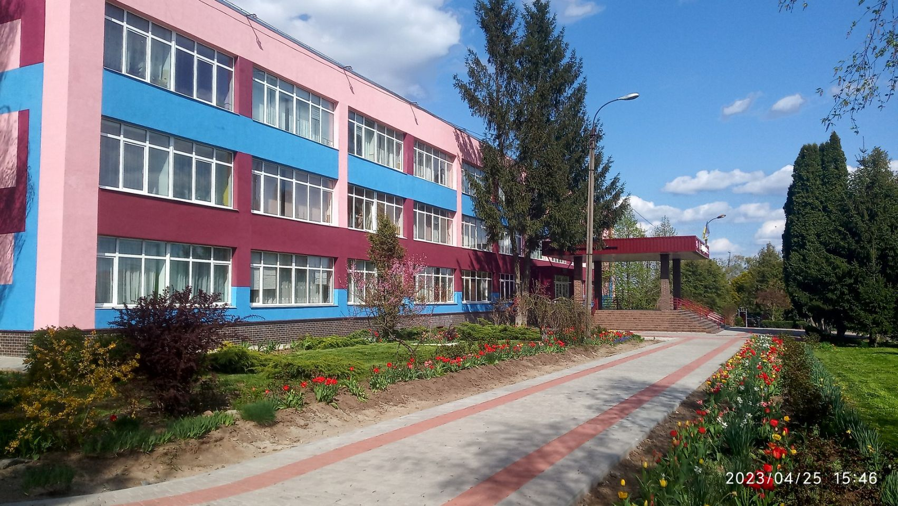
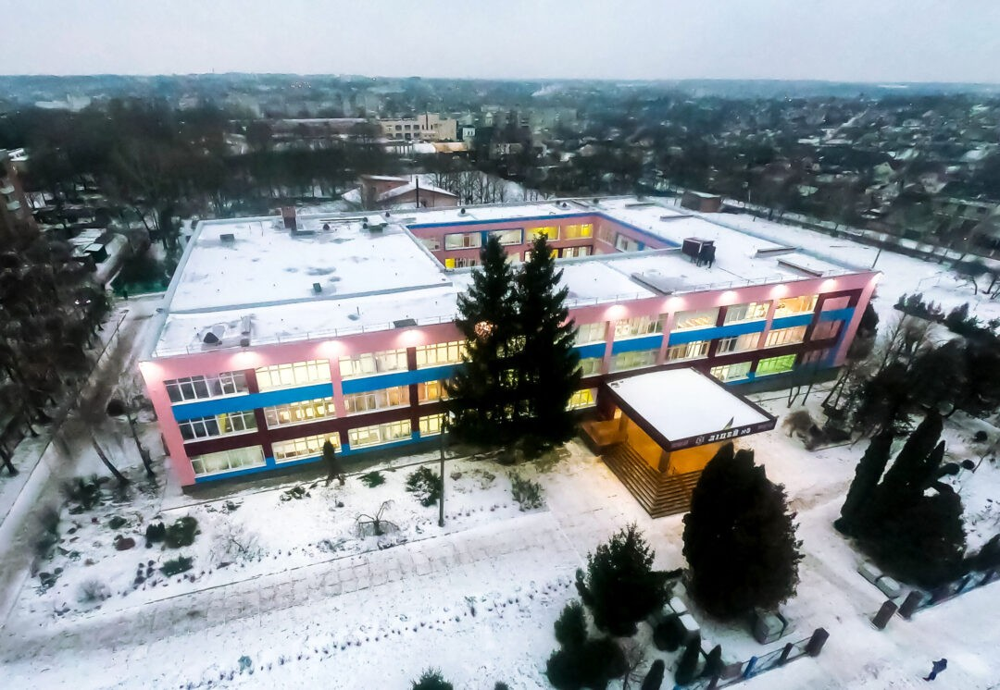
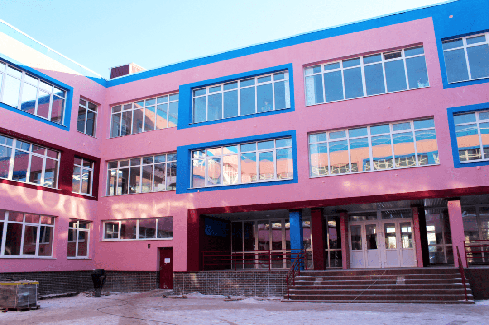

Уманський ліцей №3

Уманський ліцей №3 - це навчальний заклад, який знаходиться в місті Умань, Черкаська область. Ліцей має офіційну сторінку на Facebook, де ви можете знайти більше інформації та останні новини.

Вони також мають офіційний канал на YouTube3, де вони діляться відео про життя в ліцеї.Будь ласка, зверніть увагу, що ця інформація може бути застарілою або неповною.

Для отримання найновішої та найточнішої інформації рекомендується звертатися безпосередньо до Уманського ліцею №3.Уманський ліцей № 3 Уманської міської ради Черкаської області — загальноосвітній заклад повної середньої освіти в місті Умань Черкаської області.